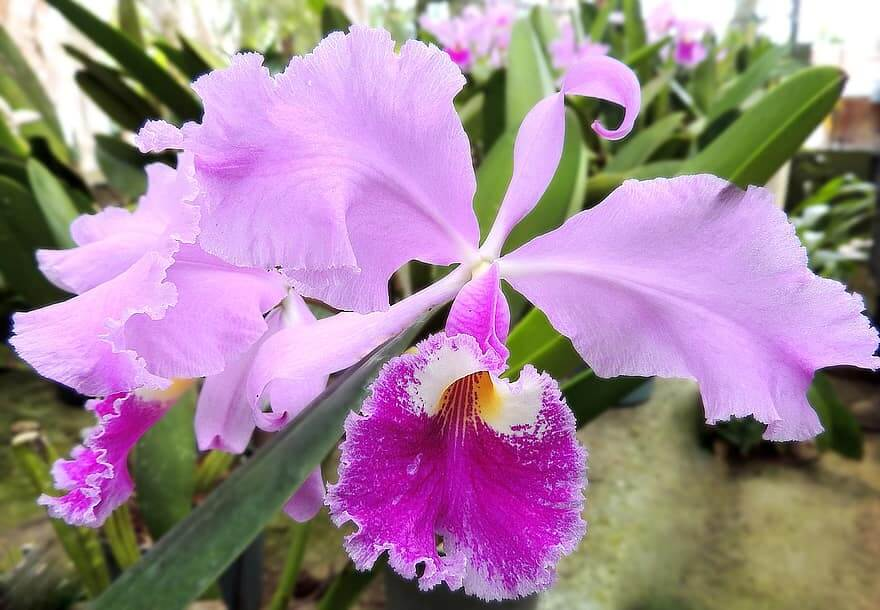
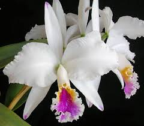
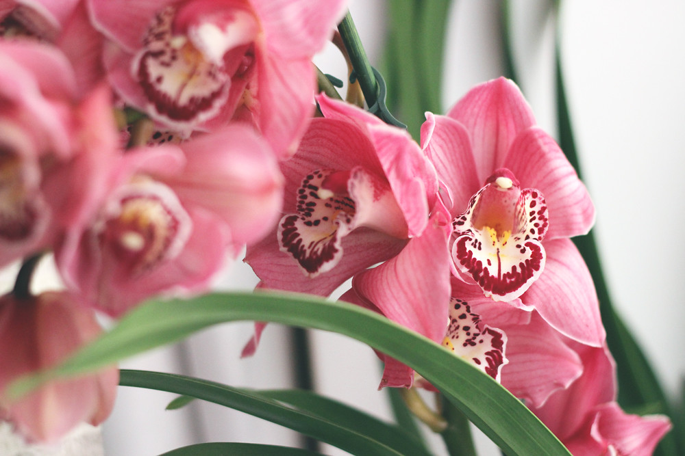
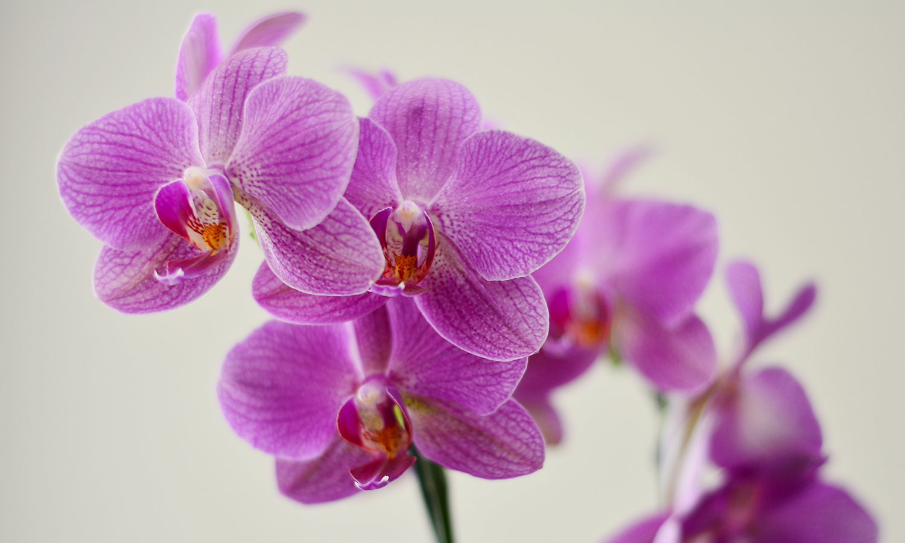
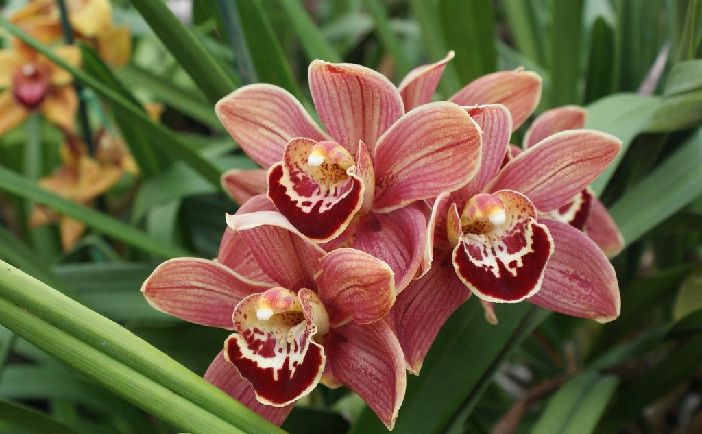
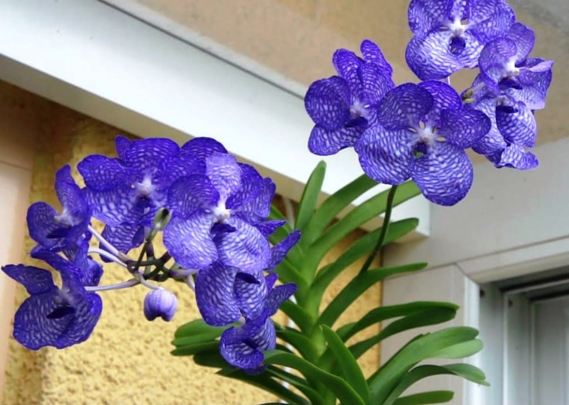
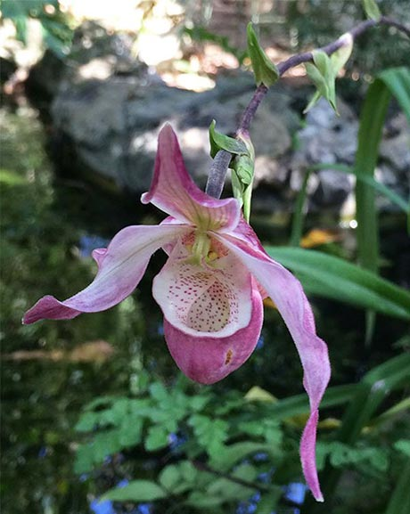
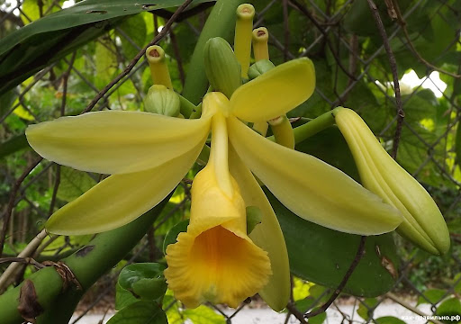

Amo las orquídeas
- Concepto
- Cuidado
- Hábitad
- Significado de tener una orquídea en casa
- Precio
- Significado de regalar una orquídea
- Duración de las flores
- Album
- Contáctenos
Concepto
Las orquídeas constituyen un grupo de plantas de morfología extremadamente diversa. Su tamaño varía desde unos pocos milímetros de longitud hasta gigantescas agregaciones que pueden pesar varios cientos de kilogramos o longitudes de hasta 13,4 m.
Cuidado, Hábitad y Significado de tener una orquídea en casa.
Cuidado
Hábitad
Las orquídeas crecen en casi todos lados pero la mayoría de las especies se encuentran en los trópicos; desde el nivel del mar hasta casi 5000 m s.n.m.; en casi todos los hábitats excepto en el agua y en el desierto. Son particularmente dominantes en hábitats con pocos nutrientes.
Significado de tener una orquídea en casa
Expresa la belleza de sentimientos de una manera muy elegante.
Es Amor, afecto, admiración y cariño .
Una orquídea en un bosque profundo emite su fragancia incluso si no hay nadie cerca para apreciarla.
Precio, Significado de regalar una orquídea y Duración de las flores.
En néctar de orquídeas la mariposa perfuma sus alas.
Precio
Significado de regalar una orquídea
En la actualidad, regalar una orquídea tiene un significado de belleza y una demostración de aprecio y admiración.

Duración de las flores
Floración. Se recomienda siempre comprar la planta florecida, ya que una orquídea puede tardar hasta 5 años en florecer la primera vez, la floración suele suceder a finales de invierno. ¡Las flores de una orquídea pueden durar hasta 12 semanas!
Álbum y Contáctenos
Álbum
       